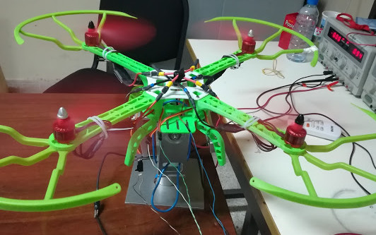

3-Finger Adaptive
Robot Gripper

During my bachelor degree at HIAST university (
Higher Institute for Applied Sciences and Technology) I have done two academic projects, the first of which is my fourth year project "3-Finger Adaptive Robot Gripper".
In this project I fully designed the gripper and manufactured the parts in the university's workshop. I also designed the electrical circuit that controls the gripper. Using C# I created a user interface that includes all functionalities of the gripper such as (controlling individual motors (position, speed), controlling the shape of the gripper (freestyle, or choose from multiple predefined shapes), etc.) I added a visual sensing using a camera which was able of estimating the dimensions of objects (and decide the best grip to catch each object)
I also built a glove for imitating the movement of a human hand.
The project's video on YouTube.
Designing and Building
a Quadcopter

My fifth year project was building a quadcopter, in which I fully designed the frame of the quadcopter and 3D printed it.The main controller of the quadcopter was a beaglebone black controller.
In addition I built a 3-DoF testing platform for testing the controllers.
WRO Robots

During my bachelor degree, I participated in three WRO competitions (Advanced category). In all three, my team was ranked the first in the national competitions and was qualified to participate in the world finals.